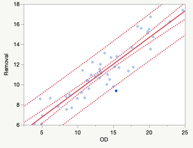
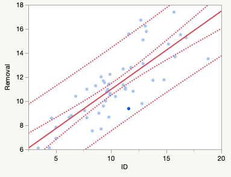

Bivariate Fit of Removal By OD

Linear Fit
Removal = 4.0989349 + 0.5283959*OD
Summary of Fit
| RSquare | 0.840461 |
| RSquare Adj | 0.837137 |
| Root Mean Square Error | 1.123915 |
| Mean of Response | 11.26504 |
| Observations (or Sum Wgts) | 50 |
Analysis of Variance
| Source | DF | Sum of Squares | Mean Square | F Ratio |
|---|
| Model | 1 | 319.41789 | 319.418 | 252.8671 |
| Error | 48 | 60.63288 | 1.263 | Prob > F |
| C. Total | 49 | 380.05077 | | <.0001* |
Parameter Estimates
| Term | Estimate | Std Error | t Ratio | Prob>|t| |
|---|
| Intercept | 4.0989349 | 0.477857 | 8.58 | <.0001* |
| OD | 0.5283959 | 0.033229 | 15.90 | <.0001* |
|
Bivariate Fit of Removal By ID

Linear Fit
Removal = 4.4769092 + 0.6500796*ID
Summary of Fit
| RSquare | 0.635112 |
| RSquare Adj | 0.627511 |
| Root Mean Square Error | 1.699729 |
| Mean of Response | 11.26504 |
| Observations (or Sum Wgts) | 50 |
Analysis of Variance
| Source | DF | Sum of Squares | Mean Square | F Ratio |
|---|
| Model | 1 | 241.37494 | 241.375 | 83.5473 |
| Error | 48 | 138.67583 | 2.889 | Prob > F |
| C. Total | 49 | 380.05077 | | <.0001* |
Parameter Estimates
| Term | Estimate | Std Error | t Ratio | Prob>|t| |
|---|
| Intercept | 4.4769092 | 0.780583 | 5.74 | <.0001* |
| ID | 0.6500796 | 0.071121 | 9.14 | <.0001* |
|